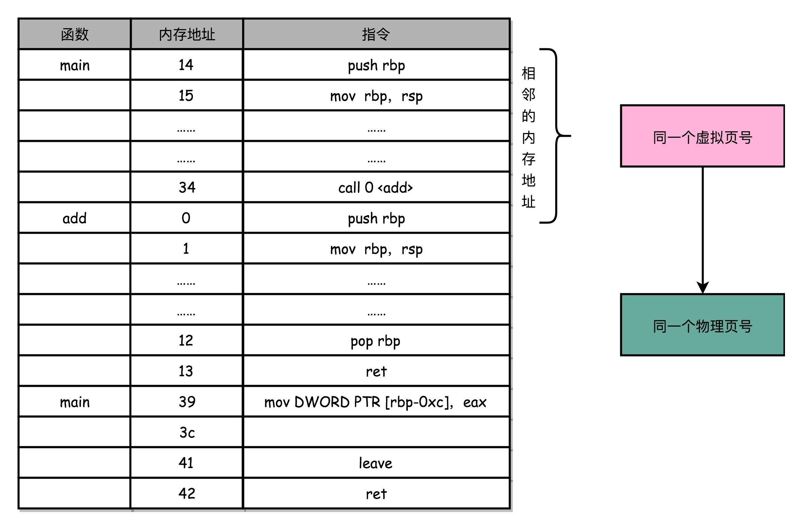
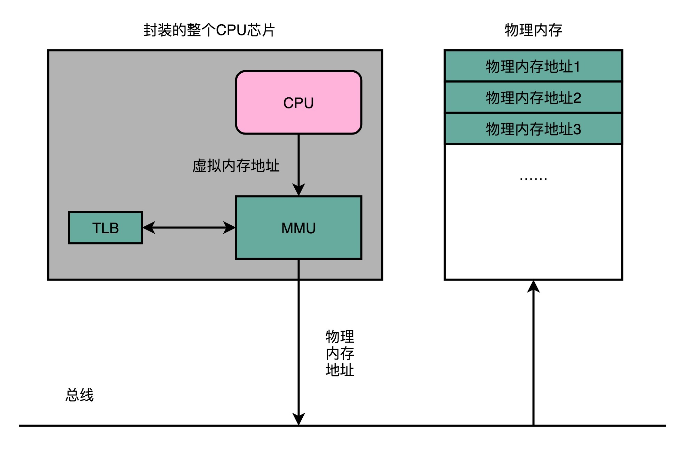
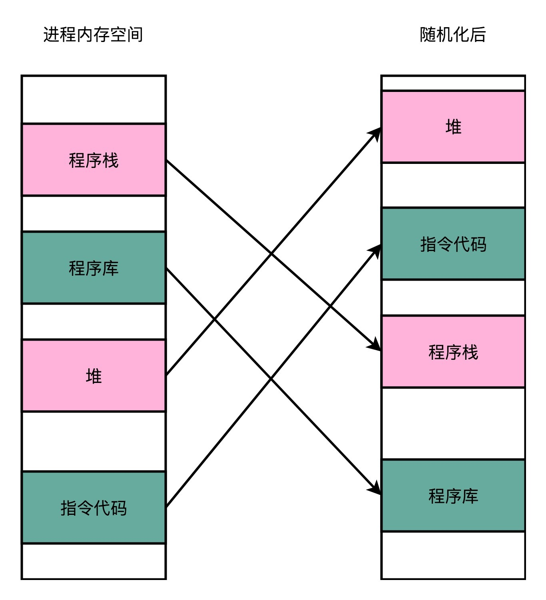

- 00 开篇词 为什么你需要学习计算机组成原理？.md
- 01 冯·诺依曼体系结构：计算机组成的金字塔.md
- 02 给你一张知识地图，计算机组成原理应该这么学.md
- 03 通过你的CPU主频，我们来谈谈“性能”究竟是什么？.md
- 04 穿越功耗墙，我们该从哪些方面提升“性能”？.md
- 05 计算机指令：让我们试试用纸带编程.md
- 06 指令跳转：原来if...else就是goto.md
- 07 函数调用：为什么会发生stack overflow？.md
- 08 ELF和静态链接：为什么程序无法同时在Linux和Windows下运行？.md
- 09 程序装载：“640K内存”真的不够用么？.md
- 10 动态链接：程序内部的“共享单车”.md
- 11 二进制编码：“手持两把锟斤拷，口中疾呼烫烫烫”？.md
- 12 理解电路：从电报机到门电路，我们如何做到“千里传信”？.md
- 13 加法器：如何像搭乐高一样搭电路（上）？.md
- 14 乘法器：如何像搭乐高一样搭电路（下）？.md
- 15 浮点数和定点数（上）：怎么用有限的Bit表示尽可能多的信息？.md
- 16 浮点数和定点数（下）：深入理解浮点数到底有什么用？.md
- 17 建立数据通路（上）：指令加运算=CPU.md
- 18 建立数据通路（中）：指令加运算=CPU.md
- 19 建立数据通路（下）：指令加运算=CPU.md
- 20 面向流水线的指令设计（上）：一心多用的现代CPU.md
- 21 面向流水线的指令设计（下）：奔腾4是怎么失败的？.md
- 22 冒险和预测（一）：hazard是“危”也是“机”.md
- 23 冒险和预测（二）：流水线里的接力赛.md
- 24 冒险和预测（三）：CPU里的“线程池”.md
- 25 冒险和预测（四）：今天下雨了，明天还会下雨么？.md
- 26 Superscalar和VLIW：如何让CPU的吞吐率超过1？.md
- 27 SIMD：如何加速矩阵乘法？.md
- 28 异常和中断：程序出错了怎么办？.md
- 29 CISC和RISC：为什么手机芯片都是ARM？.md
- 30 GPU（上）：为什么玩游戏需要使用GPU？.md
- 31 GPU（下）：为什么深度学习需要使用GPU？.md
- 32 FPGA、ASIC和TPU（上）：计算机体系结构的黄金时代.md
- 33 解读TPU：设计和拆解一块ASIC芯片.md
- 34 理解虚拟机：你在云上拿到的计算机是什么样的？.md
- 35 存储器层次结构全景：数据存储的大金字塔长什么样？.md
- 36 局部性原理：数据库性能跟不上，加个缓存就好了？.md
- 37 理解CPU Cache（上）：“4毫秒”究竟值多少钱？.md
- 38 高速缓存（下）：你确定你的数据更新了么？.md
- 39 MESI协议：如何让多核CPU的高速缓存保持一致？.md
- 40 理解内存（上）：虚拟内存和内存保护是什么？.md
- 41 理解内存（下）：解析TLB和内存保护.md
- 42 总线：计算机内部的高速公路.md
- 43 输入输出设备：我们并不是只能用灯泡显示“0”和“1”.md
- 44 理解IO_WAIT：IO性能到底是怎么回事儿？.md
- 45 机械硬盘：Google早期用过的“黑科技”.md
- 46 SSD硬盘（上）：如何完成性能优化的KPI？.md
- 47 SSD硬盘（下）：如何完成性能优化的KPI？.md
- 48 DMA：为什么Kafka这么快？.md
- 49 数据完整性（上）：硬件坏了怎么办？.md
- 50 数据完整性（下）：如何还原犯罪现场？.md
- 51 分布式计算：如果所有人的大脑都联网会怎样？.md
- 52 设计大型DMP系统（上）：MongoDB并不是什么灵丹妙药.md
- 53 设计大型DMP系统（下）：SSD拯救了所有的DBA.md
- 54 理解Disruptor（上）：带你体会CPU高速缓存的风驰电掣.md
- 55 理解Disruptor（下）：不需要换挡和踩刹车的CPU，有多快？.md
- 结束语 知也无涯，愿你也享受发现的乐趣.md
41 理解内存（下）：解析TLB和内存保护
机器指令里面的内存地址都是虚拟内存地址。程序里面的每一个进程，都有一个属于自己的虚拟内存地址空间。我们可以通过地址转换来获得最终的实际物理地址。我们每一个指令都存放在内存里面，每一条数据都存放在内存里面。因此，“地址转换”是一个非常高频的动作，“地址转换”的性能就变得至关重要了。这就是我们今天要讲的第一个问题，也就是性能问题。
因为我们的指令、数据都存放在内存里面，这里就会遇到我们今天要谈的第二个问题，也就是内存安全问题。如果被人修改了内存里面的内容，我们的 CPU 就可能会去执行我们计划之外的指令。这个指令可能是破坏我们服务器里面的数据，也可能是被人获取到服务器里面的敏感信息。
现代的 CPU 和操作系统，会通过什么样的方式来解决这两个问题呢？别着急，等讲完今天的内容，你就知道答案了。
加速地址转换：TLB
上一节我们说了，从虚拟内存地址到物理内存地址的转换，我们通过页表这个数据结构来处理。为了节约页表的内存存储空间，我们会使用多级页表数据结构。
不过，多级页表虽然节约了我们的存储空间，但是却带来了时间上的开销，变成了一个“以时间换空间”的策略。原本我们进行一次地址转换，只需要访问一次内存就能找到物理页号，算出物理内存地址。但是用了 4 级页表，我们就需要访问 4 次内存，才能找到物理页号。
我们知道，内存访问其实比 Cache 要慢很多。我们本来只是要做一个简单的地址转换，现在反而要一下子多访问好多次内存。这种情况该怎么处理呢？你是否还记得之前讲过的“加个缓存”的办法呢？我们来试一试。
程序所需要使用的指令，都顺序存放在虚拟内存里面。我们执行的指令，也是一条条顺序执行下去的。也就是说，我们对于指令地址的访问，存在前面几讲所说的“空间局部性”和“时间局部性”，而需要访问的数据也是一样的。我们连续执行了 5 条指令。因为内存地址都是连续的，所以这 5 条指令通常都在同一个“虚拟页”里。
因此，这连续 5 次的内存地址转换，其实都来自于同一个虚拟页号，转换的结果自然也就是同一个物理页号。那我们就可以用前面几讲说过的，用一个“加个缓存”的办法。把之前的内存转换地址缓存下来，使得我们不需要反复去访问内存来进行内存地址转换。

于是，计算机工程师们专门在 CPU 里放了一块缓存芯片。这块缓存芯片我们称之为TLB，全称是地址变换高速缓冲（Translation-Lookaside Buffer）。这块缓存存放了之前已经进行过地址转换的查询结果。这样，当同样的虚拟地址需要进行地址转换的时候，我们可以直接在 TLB 里面查询结果，而不需要多次访问内存来完成一次转换。
TLB 和我们前面讲的 CPU 的高速缓存类似，可以分成指令的 TLB 和数据的 TLB，也就是ITLB和DTLB。同样的，我们也可以根据大小对它进行分级，变成 L1、L2 这样多层的 TLB。
除此之外，还有一点和 CPU 里的高速缓存也是一样的，我们需要用脏标记这样的标记位，来实现“写回”这样缓存管理策略。

为了性能，我们整个内存转换过程也要由硬件来执行。在 CPU 芯片里面，我们封装了内存管理单元（MMU，Memory Management Unit）芯片，用来完成地址转换。和 TLB 的访问和交互，都是由这个 MMU 控制的。
安全性与内存保护
讲完了虚拟内存和物理内存的转换，我们来看看内存保护和安全性的问题。
进程的程序也好，数据也好，都要存放在内存里面。实际程序指令的执行，也是通过程序计数器里面的地址，去读取内存内的内容，然后运行对应的指令，使用相应的数据。
虽然我们现代的操作系统和 CPU，已经做了各种权限的管控。正常情况下，我们已经通过虚拟内存地址和物理内存地址的区分，隔离了各个进程。但是，无论是 CPU 这样的硬件，还是操作系统这样的软件，都太复杂了，难免还是会被黑客们找到各种各样的漏洞。
就像我们在软件开发过程中，常常会有一个“兜底”的错误处理方案一样，在对于内存的管理里面，计算机也有一些最底层的安全保护机制。这些机制统称为内存保护（Memory Protection）。我这里就为你简单介绍两个。
可执行空间保护
第一个常见的安全机制，叫可执行空间保护（Executable Space Protection）。
这个机制是说，我们对于一个进程使用的内存，只把其中的指令部分设置成“可执行”的，对于其他部分，比如数据部分，不给予“可执行”的权限。因为无论是指令，还是数据，在我们的 CPU 看来，都是二进制的数据。我们直接把数据部分拿给 CPU，如果这些数据解码后，也能变成一条合理的指令，其实就是可执行的。
这个时候，黑客们想到了一些搞破坏的办法。我们在程序的数据区里，放入一些要执行的指令编码后的数据，然后找到一个办法，让 CPU 去把它们当成指令去加载，那 CPU 就能执行我们想要执行的指令了。对于进程里内存空间的执行权限进行控制，可以使得 CPU 只能执行指令区域的代码。对于数据区域的内容，即使找到了其他漏洞想要加载成指令来执行，也会因为没有权限而被阻挡掉。
其实，在实际的应用开发中，类似的策略也很常见。我下面给你举两个例子。
比如说，在用 PHP 进行 Web 开发的时候，我们通常会禁止 PHP 有 eval 函数的执行权限。这个其实就是害怕外部的用户，所以没有把数据提交到服务器，而是把一段想要执行的脚本提交到服务器。服务器里在拼装字符串执行命令的时候，可能就会执行到预计之外被“注入”的破坏性脚本。这里我放了一个例子，用这个办法可以去删除服务器上的数据。
script.php?param1=xxx
// 我们的 PHP 接受一个传入的参数，这个参数我们希望提供计算功能
$code = eval($_GET["param1"]);
// 我们直接通过 eval 计算出来对应的参数公式的计算结果
script.php?param1=";%20echo%20exec('rm -rf ~/');%20//
// 用户传入的参数里面藏了一个命令
$code = ""; echo exec('rm -rf ~/'); //";
// 执行的结果就变成了删除服务器上的数据
还有一个例子就是 SQL 注入攻击。如果服务端执行的 SQL 脚本是通过字符串拼装出来的，那么在 Web 请求里面传输的参数就可以藏下一些我们想要执行的 SQL，让服务器执行一些我们没有想到过的 SQL 语句。这样的结果就是，或者破坏了数据库里的数据，或者被人拖库泄露了数据。
地址空间布局随机化
第二个常见的安全机制，叫地址空间布局随机化（Address Space Layout Randomization）。
内存层面的安全保护核心策略，是在可能有漏洞的情况下进行安全预防。上面的可执行空间保护就是一个很好的例子。但是，内存层面的漏洞还有其他的可能性。
这里的核心问题是，其他的人、进程、程序，会去修改掉特定进程的指令、数据，然后，让当前进程去执行这些指令和数据，造成破坏。要想修改这些指令和数据，我们需要知道这些指令和数据所在的位置才行。
原先我们一个进程的内存布局空间是固定的，所以任何第三方很容易就能知道指令在哪里，程序栈在哪里，数据在哪里，堆又在哪里。这个其实为想要搞破坏的人创造了很大的便利。而地址空间布局随机化这个机制，就是让这些区域的位置不再固定，在内存空间随机去分配这些进程里不同部分所在的内存空间地址，让破坏者猜不出来。猜不出来呢，自然就没法找到想要修改的内容的位置。如果只是随便做点修改，程序只会 crash 掉，而不会去执行计划之外的代码。

这样的“随机化”策略，其实也是我们日常应用开发中一个常见的策略。一个大家都应该接触过的例子就是密码登陆功能。网站和 App 都会需要你设置用户名和密码，之后用来登陆自己的账号。然后，在服务器端，我们会把用户名和密码保存下来，在下一次用户登陆的时候，使用这个用户名和密码验证。
我们的密码当然不能明文存储在数据库里，不然就会有安全问题。如果明文存储在数据库里，意味着能拿到数据库访问权限的人，都能看到用户的明文密码。这个可能是因为安全漏洞导致被人拖库，而且网站的管理员也能直接看到所有的用户名和密码信息。
比如，前几年 CSDN 就发生过被人拖库的事件。虽然用户名和密码都是明文保存的，别人如果只是拿到了 CSDN 网站的用户名密码，用户的损失也不会太大。但是很多用户可能会在不同的网站使用相同的密码，如果拿到这些用户名和密码的人，能够成功登录用户的银行、支付、社交等等其他网站的话，用户损失就大了去了。
于是，大家会在数据库里存储密码的哈希值，比如用现在常用的 SHA256，生成一一个验证的密码哈希值。但是这个往往还是不够的。因为同样的密码，对应的哈希值都是相同的，大部分用户的密码又常常比较简单。于是，拖库成功的黑客可以通过彩虹表的方式，来推测出用户的密码。
这个时候，我们的“随机化策略”就可以用上了。我们可以在数据库里，给每一个用户名生成一个随机的、使用了各种特殊字符的盐值（Salt）。这样，我们的哈希值就不再是仅仅使用密码来生成的了，而是密码和盐值放在一起生成的对应的哈希值。哈希值的生成中，包括了一些类似于“乱码”的随机字符串，所以通过彩虹表碰撞来猜出密码的办法就用不了了。
$password = "goodmorning12345";
// 我们的密码是明文存储的
$hashed_password = hash('sha256', password);
// 对应的 hash 值是 054df97ac847f831f81b439415b2bad05694d16822635999880d7561ee1b77ac
// 但是这个 hash 值里可以用彩虹表直接“猜出来”原始的密码就是 goodmorning12345
$salt = "#21Pb$Hs&Xi923^)?";
$salt_password = $salt.$password;
$hashed_salt_password = hash('sha256', salt_password);
// 这个 hash 后的 slat 因为有部分随机的字符串，不会在彩虹表里面出现。
// 261e42d94063b884701149e46eeb42c489c6a6b3d95312e25eee0d008706035f
可以看到，通过加入“随机”因素，我们有了一道最后防线。即使在出现安全漏洞的时候，我们也有了更多的时间和机会去补救这些问题。
虽然安全机制似乎在平时用不太到，但是在开发程序的时候，还是要有安全意识。毕竟谁也不想看到，被拖库的新闻里出现的是自己公司的名字，也不希望用户因为我们的错误遭受到损失。
总结延伸
为了节约页表所需要的内存空间，我们采用了多级页表这样一个数据结构。但是，多级页表虽然节省空间了，却要花费更多的时间去多次访问内存。于是，我们在实际进行地址转换的 MMU 旁边放上了 TLB 这个用于地址转换的缓存。TLB 也像 CPU Cache 一样，分成指令和数据部分，也可以进行 L1、L2 这样的分层。
然后，我为你介绍了内存保护。无论是数据还是代码，我们都要存放在内存里面。为了防止因为各种漏洞，导致一个进程可以访问别的进程的数据或者代码，甚至是执行对应的代码，造成严重的安全问题，我们介绍了最常用的两个内存保护措施，可执行空间保护和地址空间布局随机化。
通过让数据空间里面的内容不能执行，可以避免了类似于“注入攻击”的攻击方式。通过随机化内存空间的分配，可以避免让一个进程的内存里面的代码，被推测出来，从而不容易被攻击。
推荐阅读
对于内存保护的相关知识，你可以通过Wikipedia 里面的相关条目来进一步了解相关的信息。
另外，2017 年暴露出来的Spectre 和 Meltdown 漏洞的相关原理，你也可以在 Wikipedia 里面找到相关的信息，来了解一下。
Spectre 和 Meltdown 漏洞，出现在 CPU 的高速缓存和虚拟机结合的层面。理解这个漏洞，可以让你看到，安全问题是如何出现各种让人难以想到的结果。这也是为什么我们需要可执行空间保护和地址空间布局，随机化这样的“防卫性”的安全策略。即使我们不知道漏洞可以从哪里来，即使漏洞可能已经发生了，这些策略也能够使得我们的系统更不容易被攻破。